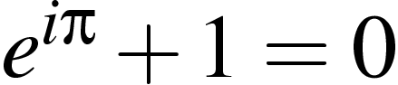

Course description and course information
Coursework
Exercise class on Nov 5 used for review,
Test on Nov 8,
solutions and marking scheme
- Coursework 5 (due Nov 16, 11am),
sample solutions
- Coursework 6 (due Nov 23, 11am),
sample solutions
- Coursework 7 (due Nov 30, 11am),
sample solutions
- Coursework 8 (due Dec 7, 11am),
sample solutions
- Coursework 9 (due Dec 14, 11am),
sample solutions
Previous Exams
Due to a large list of relevant previous exams, there is no need for a sample exam paper.
Thomas Prellberg
December 2004